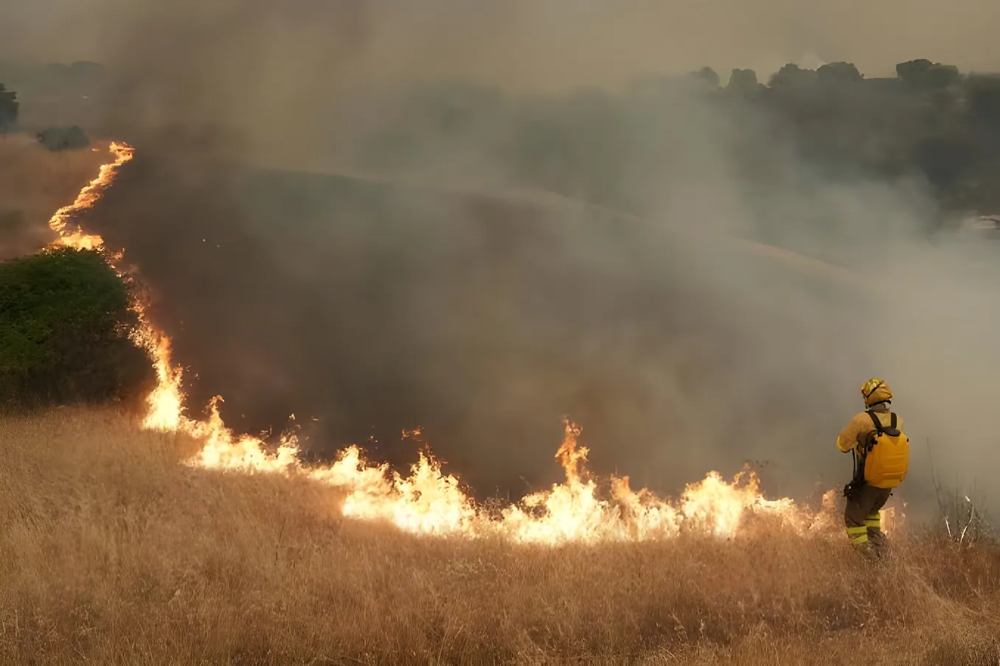

Du 22 juillet au 4 août 2026, un gigantesque incendie de forêt a ravagé la Sierra Oeste madrilène et la province voisine d'Ávila, brûlant plus de 75 000 hectares et provoquant l'évacuation ou le confinement de dizaines de milliers de personnes. Pour la première fois de son histoire, le mécanisme espagnol d'urgence d'intérêt national a été activé en raison d'un feu de forêt, alors que le pays traversait une vague de chaleur exceptionnelle et l'un des étés les plus destructeurs de son histoire récente en matière d'incendies.
Tout commence le 22 juillet 2026 près de Burgohondo, dans la province d'Ávila, où un incendie se déclare en pleine canicule. Dans le même temps, trois foyers distincts se développent côté madrilène, à Villa del Prado, San Martín de Valdeiglesias et Almorox. Face à leur propagation rapide, la ministre de l'Intérieur, saisie par la présidente de la Communauté de Madrid Isabel Díaz Ayuso, déclare dans la nuit du 23 au 24 juillet l'« urgence d'intérêt national » pour la Communauté de Madrid et la province d'Ávila, un dispositif exceptionnel étendu par la suite à la province de Tolède. Il ne s'agissait que de la deuxième activation de ce mécanisme dans l'histoire espagnole, et de la toute première pour un incendie de forêt. Le 24 juillet, les trois foyers madrilènes fusionnent en un seul incendie, baptisé « Sierra Oeste ». La Guardia Civil interpelle par ailleurs deux hommes soupçonnés d'avoir utilisé un engin lourd dans une zone classée à haut risque d'incendie ; tous deux seront ensuite remis en liberté provisoire, avec interdiction de quitter le territoire.
Le 25 juillet marque le pic de la crise. La présidente régionale Isabel Díaz Ayuso qualifie l'événement de « pire incendie de l'histoire de la capitale ». Au-dessus du village de Zarzalejo, le ciel vire à l'orange et le soleil au rouge, tandis que quelque 60 000 personnes sont évacuées ou confinées chez elles dans la région madrilène. Les jours suivants, de nouvelles communes comme Valdemaqueda doivent à leur tour être évacuées, tandis qu'à Cadalso de los Vidrios et Villa del Prado, les pompiers protègent les lotissements menacés. Côté Ávila, le vent devient le facteur déterminant, avec des points de tension autour du col de Mijares et de la commune de Casillas. Le feu n'est officiellement déclaré « contenu » que le 26 juillet par l'Unité militaire d'urgence (UME), avant d'être considéré comme stabilisé les jours suivants.
Départ du feu à Burgohondo (Ávila) ; trois foyers distincts se déclarent en Communauté de Madrid.
Urgence d'intérêt national déclarée pour Madrid, Ávila puis Tolède. Fusion des trois foyers madrilènes en un seul incendie, la Sierra Oeste.
Pic de la crise : ciel orange sur Zarzalejo, environ 60 000 personnes évacuées ou confinées. Ayuso évoque le « pire incendie de l'histoire de Madrid ».
Le Conseil des ministres déclare les municipalités touchées « zone gravement affectée », ouvrant la voie à des aides de l'État. Aucune victime mortelle ni blessé grave n'est à déplorer.
Pedro Sánchez annonce la fin de l'urgence nationale : plus de 75 000 hectares ont brûlé, un record en Espagne.
L'incendie, qui a touché 17 communes de la Sierra Oeste, est déclaré maîtrisé et entre en phase d'extinction.
Le président du gouvernement Pedro Sánchez se rend à deux reprises sur le terrain, au poste de commandement avancé de Navaluenga le 26 juillet puis à celui de Navalcarnero le 29 juillet, où il annonce être « plus proche de vaincre le feu » tout en appelant à la « prudence maximale ». Le 28 juillet, le Conseil des ministres classe les communes touchées de Madrid, d'Ávila et de Tolède en « zone gravement affectée par une urgence de protection civile », débloquant un premier paquet d'aides à la reconstruction. Sur le terrain, l'Unité militaire d'urgence est rejointe par des renforts aériens turcs ainsi que par des moyens venus de Grèce et d'Italie, et par plus de cent militaires de l'armée portugaise. La Communauté de Madrid organise en parallèle le transfert de plus de 1 300 personnes vulnérables — dont près de 1 000 personnes âgées, une centaine de personnes en situation de handicap et une centaine de mineurs — issues de dix-neuf établissements situés en zone menacée.
« C'est le pire incendie de l'histoire de la capitale. »
— Isabel Díaz Ayuso, présidente de la Communauté de Madrid, 25 juillet 2026L'épisode madrilène s'inscrit dans un été particulièrement meurtrier pour l'Espagne. Quelques semaines plus tôt, le 9 juillet, l'incendie de Los Gallardos, dans la province d'Almería, était devenu le plus meurtrier jamais enregistré dans le sud du pays, faisant 14 morts et 7 blessés et contraignant plus de 1 400 personnes à évacuer. À l'échelle nationale, plus de 141 000 hectares étaient partis en fumée et plus de 90 000 personnes avaient dû être évacuées ou confinées à la fin du mois de juillet, un bilan directement aggravé par les vagues de chaleur qui ont traversé l'Europe tout au long de l'été 2026, avec des températures dépassant localement les 39 °C.
| Étape | Dates | Éléments clés |
|---|---|---|
| Déclenchement | 22–24 juil. | Départ à Burgohondo, fusion de 3 foyers en un seul (Sierra Oeste) |
| Urgence nationale | 24 juil. | Activation exceptionnelle pour Madrid, Ávila, Tolède |
| Pic de la crise | 25–27 juil. | ~60 000 évacués, ciel orange, vent facteur clé en Ávila |
| Stabilisation | 28–30 juil. | Zone gravement affectée déclarée ; fin de l'urgence nationale |
| Maîtrise totale | 4 août | Incendie maîtrisé ; ~27 000 ha touchés en Communauté de Madrid |
L'épisode de la Sierra Oeste illustre la vulnérabilité croissante de l'Espagne face à des étés de plus en plus chauds et secs, un phénomène que la majorité des climatologues relient au réchauffement climatique. Si la réponse des services de protection civile n'a occasionné, à Madrid et en Ávila, ni mort ni blessé grave, sa proximité avec la tragédie de Los Gallardos rappelle la fragilité persistante du dispositif espagnol de prévention face à des feux toujours plus intenses. Pedro Sánchez a saisi l'occasion pour réclamer un « pacte d'État » face à l'urgence climatique, tandis que l'exode rural et l'abandon progressif des terres agricoles continuent d'accroître la charge combustible des forêts et des maquis de la péninsule. Reste à savoir si cet été marqué par plus de 141 000 hectares partis en fumée à l'échelle nationale suffira à transformer la prévention des incendies en priorité politique durable, au-delà de la seule gestion de l'urgence estivale.
Entre el 22 de julio y el 4 de agosto de 2026, un enorme incendio forestal arrasó la Sierra Oeste madrileña y la vecina provincia de Ávila, quemando más de 75 000 hectáreas y obligando a evacuar o confinar a decenas de miles de personas. Por primera vez en su historia, España activó el mecanismo de emergencia de interés nacional a causa de un incendio forestal, en plena ola de calor excepcional y en uno de los veranos más destructivos de su historia reciente en materia de incendios.
Todo comienza el 22 de julio de 2026 cerca de Burgohondo, en la provincia de Ávila, donde se declara un incendio en plena ola de calor. Al mismo tiempo, se desarrollan tres focos distintos en el lado madrileño, en Villa del Prado, San Martín de Valdeiglesias y Almorox. Ante su rápida propagación, la ministra del Interior, a petición de la presidenta de la Comunidad de Madrid, Isabel Díaz Ayuso, declara en la madrugada del 23 al 24 de julio la «emergencia de interés nacional» para la Comunidad de Madrid y la provincia de Ávila, un dispositivo excepcional posteriormente ampliado a la provincia de Toledo. Se trataba solo de la segunda activación de este mecanismo en la historia de España, y la primera por un incendio forestal. El 24 de julio, los tres focos madrileños se fusionan en un único incendio, bautizado «Sierra Oeste». La Guardia Civil detiene además a dos hombres sospechosos de haber utilizado maquinaria pesada en una zona clasificada de alto riesgo de incendio; ambos quedarán después en libertad provisional, con prohibición de salir del país.
El 25 de julio marca el pico de la crisis. La presidenta regional Isabel Díaz Ayuso califica lo ocurrido como «el peor incendio de la historia de la capital». Sobre el pueblo de Zarzalejo, el cielo se tiñe de naranja y el sol de rojo, mientras unas 60 000 personas son evacuadas o confinadas en sus casas en la región madrileña. En los días siguientes, nuevos municipios como Valdemaqueda deben ser evacuados a su vez, mientras que en Cadalso de los Vidrios y Villa del Prado los bomberos protegen las urbanizaciones amenazadas. En el lado de Ávila, el viento se convierte en el factor determinante, con puntos de tensión en torno al puerto de Mijares y el municipio de Casillas. El fuego solo es declarado oficialmente «contenido» el 26 de julio por la Unidad Militar de Emergencias (UME), antes de considerarse estabilizado en los días siguientes.
Inicio del fuego en Burgohondo (Ávila); se declaran tres focos distintos en la Comunidad de Madrid.
Emergencia de interés nacional declarada para Madrid, Ávila y después Toledo. Fusión de los tres focos madrileños en un único incendio, la Sierra Oeste.
Pico de la crisis: cielo naranja sobre Zarzalejo, unas 60 000 personas evacuadas o confinadas. Ayuso habla del «peor incendio de la historia de Madrid».
El Consejo de Ministros declara los municipios afectados «zona gravemente afectada», lo que abre la vía a ayudas del Estado. No se lamentan víctimas mortales ni heridos graves.
Pedro Sánchez anuncia el fin de la emergencia nacional: más de 75 000 hectáreas quemadas, un récord en España.
El incendio, que afectó a 17 municipios de la Sierra Oeste, se declara controlado y entra en fase de extinción.
El presidente del Gobierno, Pedro Sánchez, visita el terreno en dos ocasiones: el puesto de mando avanzado de Navaluenga el 26 de julio y el de Navalcarnero el 29 de julio, donde anuncia estar «más cerca de vencer al fuego» al tiempo que pide «máxima prudencia». El 28 de julio, el Consejo de Ministros clasifica los municipios afectados de Madrid, Ávila y Toledo como «zona gravemente afectada por una emergencia de protección civil», liberando un primer paquete de ayudas a la reconstrucción. Sobre el terreno, la Unidad Militar de Emergencias recibe refuerzos aéreos turcos, así como medios procedentes de Grecia e Italia, y más de un centenar de militares del ejército portugués. La Comunidad de Madrid organiza en paralelo el traslado de más de 1 300 personas vulnerables —entre ellas cerca de 1 000 personas mayores, un centenar de personas con discapacidad y un centenar de menores— procedentes de diecinueve centros situados en zona amenazada.
« Es el peor incendio de la historia de la capital. »
— Isabel Díaz Ayuso, presidenta de la Comunidad de Madrid, 25 de julio de 2026El episodio madrileño se inscribe en un verano especialmente mortífero para España. Semanas antes, el 9 de julio, el incendio de Los Gallardos, en la provincia de Almería, se había convertido en el más mortífero registrado en el sur del país, con un balance de 14 muertos y 7 heridos, y obligando a evacuar a más de 1 400 personas. A escala nacional, más de 141 000 hectáreas habían ardido y más de 90 000 personas habían tenido que ser evacuadas o confinadas a finales de julio, un balance agravado directamente por las olas de calor que recorrieron Europa durante todo el verano de 2026, con temperaturas que localmente superaron los 39 °C.
| Etapa | Fechas | Elementos clave |
|---|---|---|
| Inicio | 22–24 jul. | Origen en Burgohondo, fusión de 3 focos en uno solo (Sierra Oeste) |
| Emergencia nacional | 24 jul. | Activación excepcional para Madrid, Ávila, Toledo |
| Pico de la crisis | 25–27 jul. | ~60 000 evacuados, cielo naranja, viento factor clave en Ávila |
| Estabilización | 28–30 jul. | Zona gravemente afectada declarada; fin de la emergencia nacional |
| Control total | 4 ago. | Incendio controlado; ~27 000 ha afectadas en la Comunidad de Madrid |
El episodio de la Sierra Oeste ilustra la creciente vulnerabilidad de España frente a veranos cada vez más cálidos y secos, un fenómeno que la mayoría de los climatólogos vincula al calentamiento global. Si la respuesta de los servicios de protección civil no ocasionó, en Madrid y Ávila, ni muertos ni heridos graves, su cercanía con la tragedia de Los Gallardos recuerda la fragilidad persistente del dispositivo español de prevención frente a incendios cada vez más intensos. Pedro Sánchez aprovechó la ocasión para reclamar un «pacto de Estado» frente a la emergencia climática, mientras el éxodo rural y el abandono progresivo de las tierras agrícolas siguen aumentando la carga combustible de los bosques y matorrales de la península. Queda por ver si este verano, marcado por más de 141 000 hectáreas calcinadas a escala nacional, bastará para convertir la prevención de incendios en una prioridad política duradera, más allá de la sola gestión de la emergencia estival.